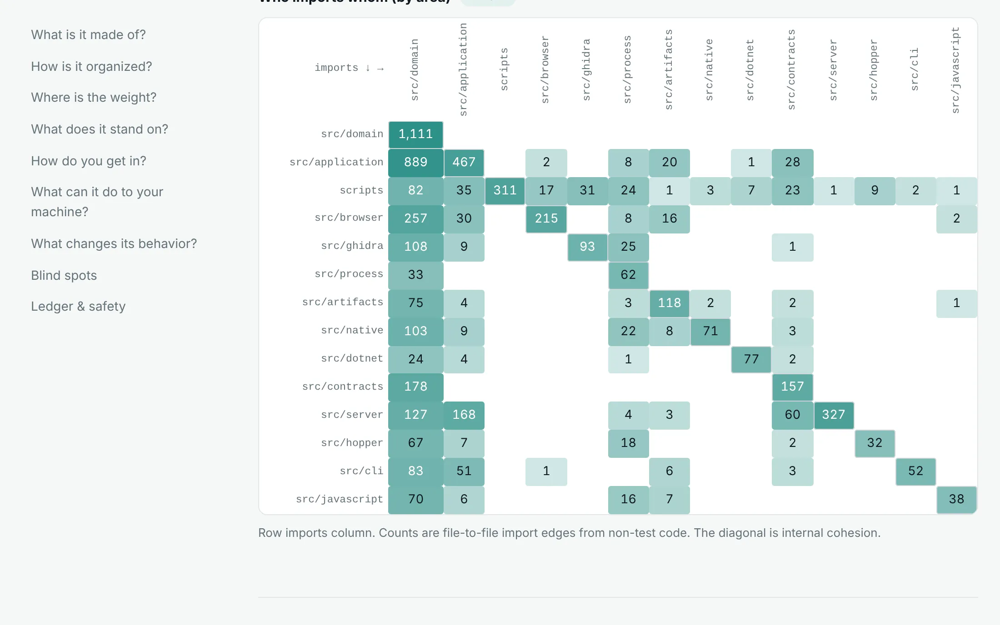
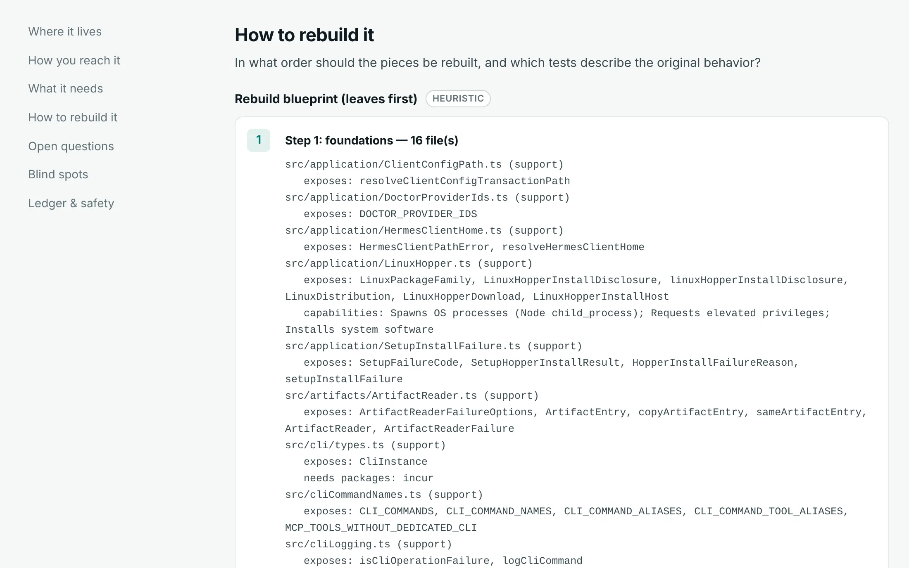

What “Reverse Engineer Anything” is able to do on your machine
REA is a popular MCP server that lets AI agents drive decompilers, browsers and live programs. Before connecting a tool with that reach to an agent, we wanted to know how it is built and what it can do to the host. Clearbox answered both from the source alone.
Summary
REA is a large TypeScript codebase. It launches programs, drives interactive terminals, and on Linux can install software with root privileges after asking. Its setup command also rewrites other AI tools' configuration files.
The repository contains 504,490 lines of code in 2,530 source files, 43 percent of them tests, joined by 10,692 file-to-file imports. Clearbox found 103 agent tool names declared in the source and 185 high-severity capability sites in production code. These are capabilities a reviewer should know about, not vulnerabilities. REA documents most of them, and its own security policy states that it is not a sandbox.
Findings
1. It launches programs and drives terminals
106 production files contain calls that start other processes, at 159 sites, and 5 drive an interactive terminal through node-pty. This is how REA runs Ghidra, Hopper and target programs. It also means anything REA runs inherits the user's permissions.
ProcessHarness.ts:265 const { spawn } = await import("@lydell/node-pty");
Basis: pattern rules over the source. Security surface report
2. It can install system software as root
The Linux installer for the Hopper disassembler runs apt-get, dnf or pacman, and escalates with pkexec when it is not already root. REA documents this behavior and asks before running it.
LinuxHopper.ts:329 ["apt-get", "install", "-y", archive, ...runtimeDependencies] LinuxHopper.ts:337 const executable = isRoot ? command[0] : "pkexec";
Basis: pattern rules over the source.
3. Its setup command edits other applications' configuration
A feature trace for “setup agent client configuration” located 10 files, reached from the rea command through the chain below. They read and write the configuration files of other AI tools, consult 32 environment variables, and are covered by 36 test files. The trace also produced a 10-step plan for rebuilding the feature.
entry scripts/rea.mjs → src/cli.ts → src/cli/setupCommands.ts writes SetupClientConfiguration.ts:183, SetupSkill.ts:145
Basis: heuristic file scoring, then a parsed import graph. Feature trace report
4. Installing it runs code
The package manifest declares a prepare script, which npm runs when the package is installed from a git checkout. Behind 38 declared runtime dependencies are 561 locked packages.
package.json:227 "prepare": "node scripts/prepare.mjs"
Basis: parsed from package.json. Dependency audit report
Architecture
REA is organized around a domain core with many adapters. The largest areas are src/domain (about 102,000 lines) and src/application (about 54,000). The most-imported files are small domain types. result.ts has 231 importers, jsonValue.ts 215 and the error core 202, so a change to any of them reaches most of the codebase.
The source imports 82 third-party packages. Another 284 imports point at compiled output, and Clearbox mapped them back to their source files. 27 import cycles make some modules hard to lift out on their own.

For the setup feature, the trace orders the files so that each step depends only on earlier ones. It lists what each file exposes and which packages it needs, so the feature can be rebuilt one tested layer at a time.

Reports
CI rebuilds these reports from REA commit a95795c on every deploy, so they always reflect the current version of Clearbox.
- Architecture overview
- Areas, import matrix, most-imported files, cycles, dependencies, entry points, configuration
- Security surface
- Every host-touching capability in production code, with its line
- Feature trace: setup
- Where the setup feature lives, how it is reached, what it needs, and how to rebuild it
- Dependency audit
- Declared versus imported packages, and install-time scripts
- Clearbox on itself
- The same security rules applied to Clearbox. Its only real capability is writing the report; the other matches are its own rule definitions.
REA can do several things Clearbox cannot. It decompiles native code through Ghidra, IDA and Hopper, observes live browsers and Electron applications, and drives Android devices. The findings above describe what a reviewer should understand before granting a tool those abilities.